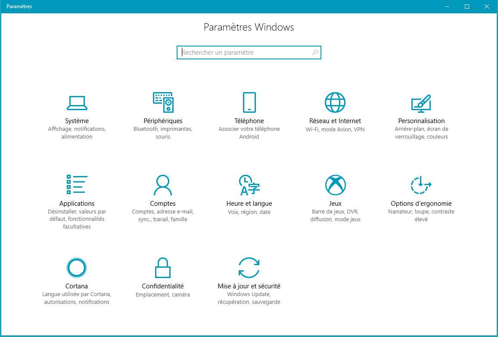
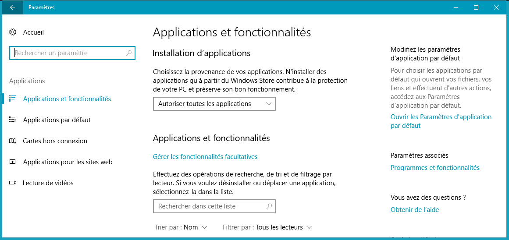
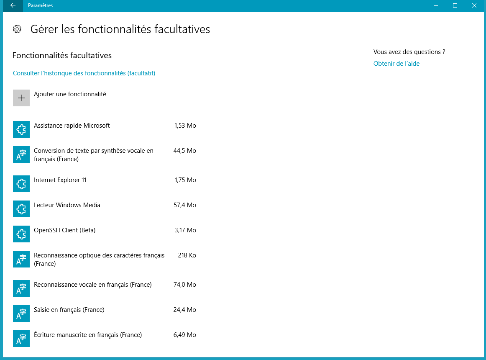
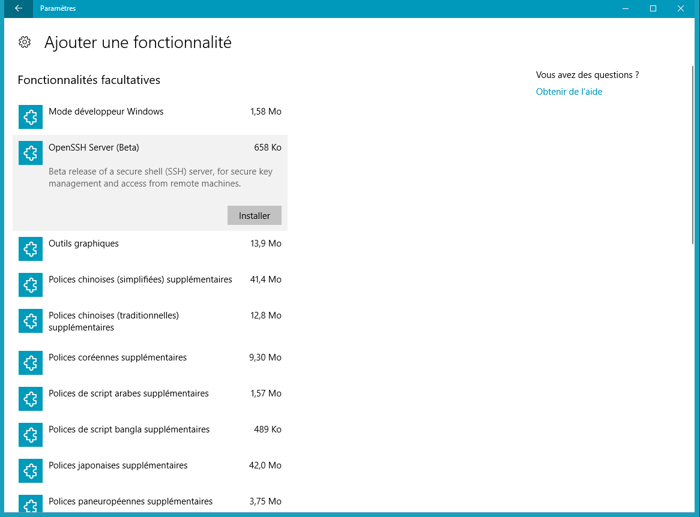
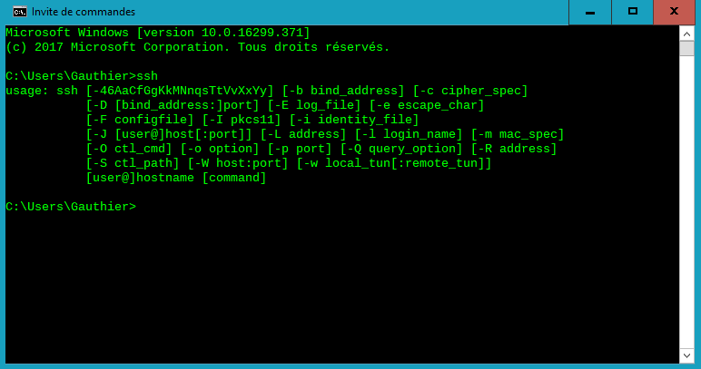

Installer openSSH sur Windows 10
Ce document a deux objectifs distincts :
- D'une façon indirecte, me permettre d'affiner et de mettre en pratique mes compétences en programmation web (HTML, CSS, JavaScript).
- Et, dans ce cas précis, permettre au lecteur d'installer openSSH sans avoir à passer par des applications tierces telles que PuTTY.
Il est rédigé en parallèle de mon apprentissage des technologies du web, que je réalise à l'aide d'un certain nombre de tutoriels et didacticiels, notamment ceux de Mozilla.org.
Contexte
Le protocole SSH (Secure SHell) permet une connexion distante et sécurisée à un serveur. Jusqu'à très récemment, les utilisateurs de Windows devaient passer par une application tierce comme PuTTY pour pouvoir établir une connexion en SSH, contrairement aux utilisateurs de MacOS ou Linux, qui peuvent le lancer directement via la ligne de commande.
Le chiffrement des échanges avec SSH
Sans rentrer dans les détails des algorithmes de chiffrement, ce qui n'est pas le sujet ici, on parlera tout de même de deux grandes catégories : les chiffrements symétriques et asymétriques. Je recommande la lecture du didacticiel suivant, sur lequel on s'appuyera plus que largement dans ce paragraphe.
Le chiffrement symétrique
Le chiffrement symétrique est la méthode de chiffrement la plus simple. Avec cette méthode, on utilise la même clé pour chiffrer et déchiffrer un message. Il faut donc que la personne qui chiffre et celle qui déchiffre connaissent toutes les deux la clé.
La difficulté de ce schéma est de trouver un moyen de s'échanger la clé. Elle ne peut en effet pas être échangée en clair, car une personne interceptant la clé pourrait alors déchiffrer tous les messages suivant. La solution pour contourner cette impasse est de chiffrer la clé de chiffrement lors de son envoi. On arrive alors à la méthode du chiffrement asymétrique.
Le chiffrement asymétrique
Le chiffrement asymétrique utilise une clé pour chiffrer et une autre pour déchiffrer.
Il y a donc deux clés:
- une clé dite "publique" qui sert à chiffrer.
- une clé dite "privée" qui sert à déchiffrer.
La clé publique ne sert qu'à chiffrer. Avec ce type d'algorithme, on ne peut déchiffrer un message que si l'on connait la clé privée.
Dans un premier temps, on demande à l'ordinateur de générer une paire de clés : une privée et une publique. La clé publique est envoyée à l'autre machine souhaitant communiquer avec l'ordinateur, pour que celle-ci puisse chiffrer ses messages à l'aide de la clé publique. La clé privée est gardé secrète par l'ordinateur pour pouvoir déchiffrer tous les messages chiffrés avec la clé publique qu'il recevra de l'autre ordinateur.
On dit donc que ce chiffrement est asymétrique car il faut deux clés différentes. L'une permet de chiffrer le message, l'autre de le déchiffrer.
La clé publique peut être transmise en clair sur le réseau, ce n'est pas grave si un pirate l'intercepte, puisqu'elle ne sert qu'à chiffrer (et non déchiffrer). En revanche la clé privée qui permet de déchiffrer doit rester secrète.
L'algorithme de chiffrement asymétrique le plus connu s'appelle RSA (pour Rivest, Shamir et Adleman, du noms de ses trois inventeurs).
Dans le cas du SSH
SSH utilise les deux chiffrements: asymétrique et symétrique. Cela fonctionne dans cet ordre :
- Les deux machines souhaitant communiquer utilisent d'abord le chiffrement asymétrique pour s'échanger une clé de chiffrement symétrique.
- Pour le reste des échanges, le chiffrement symétrique est utilisé.
Cette méthode de double chiffrement est utilisée car le chiffrement asymétrique a un défaut : il demande beaucoup trop de ressources au processeur. Le chiffrement asymétrique est 100
à 1000 fois plus lent que le chiffrement symétrique.
Le chiffrement asymétrique est donc utilisé seulement au début de la communication, afin que les machines s'échangent la clé de chiffrement symétrique de manière
sécurisée.
On a donc la procédure suivante:
- La première machine génère une clé publique et une clé privée (chiffrement asymétrique).
- La clé publique est envoyée à l'autre machine.
- Cette autre machine génére une clé symétrique, la chiffre au moyen de la clé publique puis l'envoi à la première machine.
- La première machine déchiffre le message avec sa clé privée et obtient donc la clé de chiffrement symétrique.
- Tous les échanges suivants entre les deux machines se font à laide de la clé de chiffrement symétrique qu'elles se sont échangée.
Installer OpenSSH sur Windows 10
- Se rendre dans les paramètres de Windows, et plus spécifiquement dans la section "Applications"
 - Dans la section "Applications et fonctionnalités", cliquer sur "Gérer les fonctionnalités facultatives" pour
accéder au panneau des fonctionnalités optionnelles
 Cliquer ensuite sur Ajouter une fonctionnalité, patienter le temps du chargement des options disponibles, puis choisir d'installer OpenSSH Client (Beta)
 - Pour finaliser l'installation, un redémarrage de l'ordinateur est nécessaire. Il sera alors possible de lancer un client OpenSSH directement depuis
l'invite de commandes Windows
